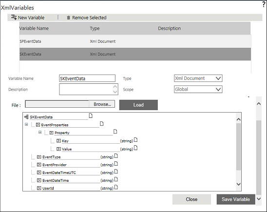
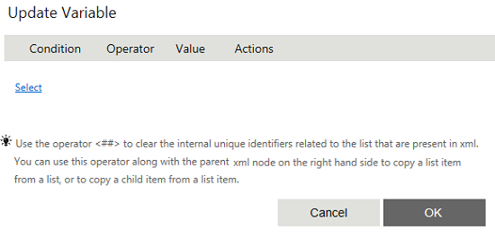
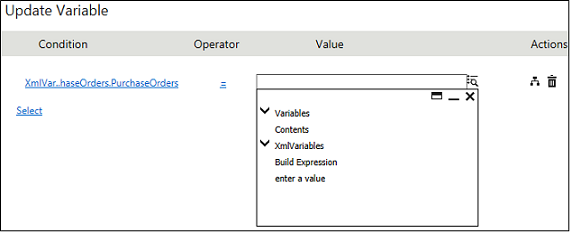

No
Adding a New List item with Grid items
AVEVA Work Tasks allows you to add list items with grid items to any list using XML variable. Update Variable activity can be used to perform this task. An XML Iterator type XML variable should be created to add the grid items (child items) and the XML Navigator activity can be used to point to the grid.
This can be explained through the scenario mentioned below.
A list, Purchase Orders, has been created with the following fields.
- Reference Number
- Purchase Order Date
- Raised By User
- Deliver To User
- Status
- Purchase Order Details
- Item Name
- Quantity
- Unit Price
- Item Total
- Total Purchase amount
From the workflow, you have to add an item along with the child item to the Purchase Orders list.
To add a new list item with grid items
- Log on to the Enterprise Console and launch the Workflow Designer page. You need to create an XML List type XML variable for the Purchase Orders list. If the variable is not created, follow the below mentioned procedure to create it.
- Click the edit icon in the XML Variables property from the Start Activity Properties. The following screen is displayed.
 - Click New Variable to add a new variable.
- Type the variable name as 'purchaseorders'.
- Select XML List from the Type drop-down.
- Type the List name in the Select List field or click the to select the list. In this case select Purchase Orders list.
- Select New as the scope from the ListItem Scope Options to point to a new item in the Purchase Orders list.

- Now you can see the XML nodes in a tree menu that are mapped to the controls while creating the list. You can also notice that the parent XML nodes and child XML nodes (PurchaseOrderDetails grid) are also displayed.
- Click Save Variable. A message is displayed saying 'Variable Updated'. Close the window.
- Drag and drop Update Variable activity to add an item in the list.
- Click the edit icon in the Set Variables property. The following screen is displayed.
 - Click the Select link and select the respective field of the XML List type XML Variable created for the list (in this case 'purchaseorders'). The fields displayed in the tree-view represent the XML nodes of the controls in the list.

- Select a field for which you want to set the value from the tree-view. Enter the value for the field in the right-hand side text box. If you want to set the value, select enter a value from the tree-view, and then type the value. Also, you can select variables or contents or any XMLvariables nodes directly by selecting the respective node from the tree-view. If you want to combine multiple node values, you can build an expression by selecting Build Expression.
 - After setting the value for all the fields in the parent item (controls in the main form) that you want to add, click OK. This will add a list item to the list, while executing the workflow, with the fields in the main form.
If you want to add an item to the grid (in this case, if you want to add a Purchase Order Details grid item), use XML Navigator activity. XML Navigator can be used to point to an item in the grid (Purchase Order Details in this case). For this purpose, you need to create an XML Iterator type XML Variable. This can be created from the Start activity XML variable property. - In the XML Variable screen, click New Variable.
- Type the variable name as PurchaseOrderDetails.
- Select XML Iterator from the Type drop-down list.
- Select PurchaseOrders from the XML Variable drop-down list.
- Select the repeating node (Qualification) from the Node Select drop-down list.
- Click Save Variable. A message is displayed saying 'Variable Updated'. Close the window.
- Drag and drop XML Navigator activity.
- Select PurchaseOrderDetails from XML Iterator drop-down list and select Yes from Create New Node properties, to create a new node.
- Select the appropriate Location. The available options are:
- First: Navigates to the first record in the collection.
- Last: Navigates to the last record in the collection.
- Next: Navigates to the next record based on the current location.
- Previous: Navigates to the previous record based on current location.
- Index: Navigates to the record identified in the Index field.
Since we have to append the items in Purchase Order Details grid, select the option as Last.
- Click Save.
- Drag and drop the Update Variable activity to enter the grid field values.
- Click the edit icon in the Set Variables property.
- Click Select and choose the respective field of the XML Iterator type XML Variable created for the list (in this case PurchaseOrderDetails), that is, grid items. The fields displayed in the tree-view represent the XML nodes of the controls in the Purchase Order Details grid.
- Select a field for which you want to set the value from the tree-view and type the value for the field in the right-hand side text box.
- After setting the value for all the fields in the child item, click OK. A new item with grid will be added to the list while executing the workflow.
Note: If you want to add multiple items, use XML Navigator and Update Variable activities for Iterator within the For-Next Loop activities.